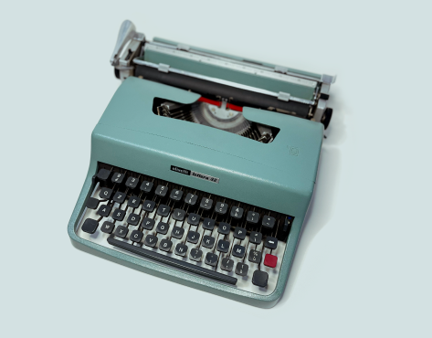

The Olivetti Lettera 32 was designed in Italy by Marcello Nizzoli in 1963. It was the popular follow up to the Lettera 22, which revolutionized portable typewriters 13 years earlier. The 32 became popular with writers, gaining notoriety with the likes of Bob Dylan, Leonard Cohen, and Cormack McCarthy. It is widely viewed as one of the best pieces of industrial design in 20th century. For more stories, check out this great writeup on a classic 1963 Lettera 32 from the from a well-respected restorer.
